← 本轮 smoke 总览traex/DeepSeek-V4.1-Flash · 0046
vision-agent · 256×144 · 4.0 FPS · 20 帧 · 状态 failed · 输出 tokens 50709
原始任务Static locked-off single-shot with fixed frame throughout filmed with constant framerate in real-time. The scene shows a realistic scientific demonstration. The scene only contains the described setup and actions. The mug is sitting on a wooden surface. The blue-black grabber tool drops the white ceramic domino into the mug that is filled with a dark-colored liquid.
尚无格式正确的 RGB 视频；保留真实执行状态。
已保存候选与代码修改
这里按时间展示外部捕获的候选，每份均可单独播放。保存新版本不等于完成视觉检查；下方工具证据记录实际看过的图。
可观测工具行为
命令 1 · 2026-11-09T01:37:48.925544+00:00/bin/bash -c "pwd && rg --files -g '"'!*.png'"' -g '"'!*.mp4'"' -g '"'!*.webm'"' -g '"'!*.mov'"' | sort"
exit 0 命令 2 · 2026-11-09T01:37:49.100403+00:00/bin/bash -c "sed -n '1,240p' prompt.txt"
exit 0 命令 3 · 2026-11-09T01:37:49.279900+00:00/bin/bash -c "sed -n '1,280p' GENERATION_RULES.md"
exit 0 命令 4 · 2026-11-09T01:37:49.568620+00:00/bin/bash -c "find . -maxdepth 2 -type f -printf '%p %s bytes\\n' | sort | head -200"
exit 0 命令 5 · 2026-11-09T01:37:55.010593+00:00/bin/bash -c "python - <<'PY'
from PIL import Image
im=Image.open('first_frame.png')
print(im.mode, im.size)
PY"exit 0 命令 6 · 2026-11-09T01:37:58.562774+00:00/bin/bash -c "sed -n '1,260p' artifact_io.py && sed -n '1,240p' player_template.html"
exit 0 命令 7 · 2026-11-09T01:38:06.238081+00:00/bin/bash -c "python - <<'PY'
import cv2, numpy as np
im=cv2.imread('first_frame.png')
# print selected colors/coords
for x,y in [(160,60),(160,80),(160,90),(160,100),(145,70),(135,50),(168,10),(170,25),(170,40),(150,50),(155,50),(165,50),(175,50),(180,50),(180,35)]:
print((x,y), im[y,x][::-1])
# ranges where blue-dominant pixels
b,g,r=cv2.split(im)
mask=(b.astype(int)>r.astype(int)+30)&(b.astype(int)>g.astype(int)+20)&(b>70)
ys,xs=np.where(mask)
print('blue bbox',xs.min(),ys.min(),xs.max(),ys.max())
PY"exit 0 命令 8 · 2026-11-09T01:38:14.952856+00:00/bin/bash -c "python - <<'PY'
from PIL import Image
im=Image.open('first_frame.png')
im.crop((115,0,215,120)).resize((600,720), Image.Resampling.NEAREST).save('.tmp/crop.png')
PY"exit 0 命令 9 · 2026-11-09T01:38:31.313502+00:00/bin/bash -c "python - <<'PY'
from PIL import Image,ImageDraw,ImageFont
im=Image.open('first_frame.png').resize((1024,576), Image.Resampling.NEAREST)
d=ImageDraw.Draw(im)
for x in range(0,257,10):
X=x*4; d.line((X,0,X,576),fill=(255,255,0),width=1)
if x%20==0: d.text((X+2,2),str(x),fill=(255,255,0))
for y in range(0,145,10):
Y=y*4; d.line((0,Y,1024,Y),fill=(255,255,0),width=1)
if y%20==0: d.text((2,Y+2),str(y),fill=(255,255,0))
im.save('.tmp/grid.png')
PY"exit 0 命令 10 · 2026-11-09T01:38:49.691558+00:00/bin/bash -c "python - <<'PY'
import cv2, numpy as np
im=cv2.imread('first_frame.png')
mask=np.zeros(im.shape[:2],np.uint8)
# object shape plus slight margin, handcrafted polygon
pts=np.array([[150,0],[190,0],[190,29],[186,36],[183,78],[180,84],[176,88],[161,86],[154,80],[153,35],[149,29]],np.int32)
cv2.fillPoly(mask,[pts],255)
out=cv2.inpaint(im,mask,4,cv2.INPAINT_TELEA)
cv2.imwrite('.tmp/clean_inpaint.png',out)
# also ns
out2=cv2.inpaint(im,mask,4,cv2.INPAINT_NS)
cv2.imwrite('.tmp/clean_ns.png',out2)
# side by side scaled
cv2.imwrite('.tmp/clean_compare.png',np.hstack([cv2.resize(out,(512,288),interpolation=cv2.INTER_NEAREST),cv2.resize(out2,(512,288),interpolation=cv2.INTER_NEAREST)]))
PY"exit 0 命令 11 · 2026-11-09T01:39:14.679385+00:00/bin/bash -c "python - <<'PY'
from PIL import Image
im=Image.open('.tmp/clean_inpaint.png')
im.crop((118,48,194,96)).resize((760,480), Image.Resampling.NEAREST).save('.tmp/clean_crop.png')
PY"exit 0 命令 12 · 2026-11-09T01:39:28.584627+00:00/bin/bash -c "python - <<'PY'
import cv2, numpy as np
im=cv2.imread('first_frame.png')
h,w=im.shape[:2]
mask=np.zeros((h,w),np.uint8)
pts=np.array([[149,0],[190,0],[190,30],[186,37],[183,77],[181,84],[175,88],[160,87],[153,82],[152,35]],np.int32)
cv2.fillPoly(mask,[pts],255)
out=im.copy()
cx=160
for y in range(h):
for x in range(w):
if mask[y,x]:
mx=2*cx-x
if 0<=mx<w:
out[y,x]=im[y,mx]
# small feathered inpainting only for center pixels where mirror not sensible? no
cv2.imwrite('.tmp/clean_mirror.png',out)
cv2.imwrite('.tmp/mirror_crop.png',cv2.resize(out[0:120,115:215],(600,720),interpolation=cv2.INTER_NEAREST))
PY"exit 0 命令 13 · 2026-11-09T01:39:44.749628+00:00/bin/bash -c "python - <<'PY'
from PIL import Image
im=Image.open('first_frame.png')
# print RGB grid relevant coords
for y in [50,52,54,56,58,60,62,64,66,68,70,72,74,76,78,80,82]:
print('y',y)
for x in [125,128,132,136,140,144,148,152,156,160,164,168,172,176,180,184,188,192,196]:
print(x, '%02x%02x%02x'%im.getpixel((x,y)), end=' ')
print()
PY"exit 0 命令 14 · 2026-11-09T01:39:56.782339+00:00/bin/bash -c "python - <<'PY'
from PIL import Image, ImageEnhance
im=Image.open('first_frame.png')
im.crop((130,0,200,100)).resize((700,1000), Image.Resampling.NEAREST).save('.tmp/object_crop.png')
ImageEnhance.Contrast(im.crop((120,30,200,100))).enhance(1.8).resize((800,700), Image.Resampling.NEAREST).save('.tmp/contrast_crop.png')
PY"exit 0 命令 15 · 2026-11-09T01:40:22.694623+00:00/bin/bash -c "python - <<'PY'
import cv2,numpy as np
im=cv2.imread('first_frame.png')
h,w=im.shape[:2]
for name,pts in {
'a':[(158,23),(171,24),(175,31),(178,72),(174,80),(165,83),(154,80),(152,34)],
'b':[(155,24),(172,24),(176,30),(179,74),(174,82),(163,84),(153,80),(151,34)],
}.items():
mask=np.zeros((h,w),np.uint8); cv2.fillPoly(mask,[np.array(pts,np.int32)],255)
for typ,flag in [('telea',cv2.INPAINT_TELEA),('ns',cv2.INPAINT_NS)]:
out=cv2.inpaint(im,mask,3,flag)
cv2.imwrite(f'.tmp/plate_{name}_{typ}.png',out)
cv2.imwrite(f'.tmp/plate_{name}_{typ}_crop.png',cv2.resize(out[15:95,120:200],(640,640),interpolation=cv2.INTER_NEAREST))
PY"exit 0 命令 16 · 2026-11-09T01:41:33.773514+00:00/bin/bash -c "python - <<'PY'
import cv2, numpy as np
im=cv2.imread('first_frame.png').astype(np.float32)
h,w=im.shape[:2]
mask=np.zeros((h,w),np.uint8)
body=np.array([[153,20],[173,20],[178,28],[180,77],[176,83],[162,84],[152,78],[151,30]],np.int32)
tool=np.array([[150,0],[188,0],[188,23],[150,23]],np.int32)
cv2.fillPoly(mask,[body],255); cv2.fillPoly(mask,[tool],255)
# remove too much at lower area? okay
base=np.zeros_like(im)
for y in range(h):
xs=np.where(mask[y]>0)[0]
if len(xs)==0:
base[y]=im[y]; continue
# runs
bounds=np.r_[0,np.flatnonzero(np.diff(xs)>1)+1,len(xs)]
for s,e in zip(bounds[:-1],bounds[1:]):
a=xs[s]; b=xs[e-1]
l=np.median(im[y,max(0,a-3):a],axis=0) if a>0 else im[y,b+1]
r=np.median(im[y,b+1:min(w,b+4)],axis=0) if b+1<w else im[y,a-1]
t=np.linspace(0,1,b-a+1)[:,None]
base[y,a:b+1]=l*(1-t)+r*t
# copy nonmask from original
out=im.copy(); out[mask>0]=base[mask>0]
# add deterministic texture with low freq
rng=np.random.default_rng(4)
noise=rng.normal(0,1,(h,w,1))
noise=cv2.GaussianBlur(noise,(3,3),0)
# stronger texture near table; subtle in cup
tex=np.repeat(noise,3,axis=2)*np.array([2.0,2.0,2.0],np.float32)
out[mask>0]+=tex[mask>0]
out=np.clip(out,0,255).astype(np.uint8)
cv2.imwrite('.tmp/clean_horiz.png',out)
cv2.imwrite('.tmp/clean_horiz_crop.png',cv2.resize(out[0:110,115:210],(760,880),interpolation=cv2.INTER_NEAREST))
# also use masked inpaint starting from this as init? cv2 doesn't support init
PY"exit 1 命令 17 · 2026-11-09T01:41:39.402499+00:00/bin/bash -c "python - <<'PY'
import cv2, numpy as np
im=cv2.imread('first_frame.png').astype(np.float32)
h,w=im.shape[:2]
mask=np.zeros((h,w),np.uint8)
body=np.array([[153,20],[173,20],[178,28],[180,77],[176,83],[162,84],[152,78],[151,30]],np.int32)
tool=np.array([[150,0],[188,0],[188,23],[150,23]],np.int32)
cv2.fillPoly(mask,[body],255); cv2.fillPoly(mask,[tool],255)
base=np.zeros_like(im)
for y in range(h):
xs=np.where(mask[y]>0)[0]
if len(xs)==0:
base[y]=im[y]; continue
bounds=np.r_[0,np.flatnonzero(np.diff(xs)>1)+1,len(xs)]
for s,e in zip(bounds[:-1],bounds[1:]):
a=xs[s]; b=xs[e-1]
l=np.median(im[y,max(0,a-3):a],axis=0) if a>0 else im[y,b+1]
r=np.median(im[y,b+1:min(w,b+4)],axis=0) if b+1<w else im[y,a-1]
t=np.linspace(0,1,b-a+1)[:,None]
base[y,a:b+1]=l*(1-t)+r*t
out=im.copy(); out[mask>0]=base[mask>0]
rng=np.random.default_rng(4)
noise=cv2.GaussianBlur(rng.normal(0,1,(h,w)),(3,3),0)
tex=np.repeat(noise[:,:,None],3,axis=2)*2.0
out[mask>0]+=tex[mask>0]
out=np.clip(out,0,255).astype(np.uint8)
cv2.imwrite('.tmp/clean_horiz.png',out)
cv2.imwrite('.tmp/clean_horiz_crop.png',cv2.resize(out[0:110,115:210],(760,880),interpolation=cv2.INTER_NEAREST))
PY"exit 0 命令 18 · 2026-11-09T01:41:47.551418+00:00/bin/bash -c "python - <<'PY'
from PIL import Image
im=Image.open('first_frame.png')
# list rough foreground segmentation using brightness/saturation relative local background for each row
import numpy as np
a=np.array(im)
for y in range(0,90,2):
# tile object likely x 145..185; print brightness max
xs=range(145,188)
vals=[int(a[y,x].mean()) for x in xs]
# print chars thresholds
print(f'{y:02d}', ''.join(' .:-=+*#%@'[min(9,v//26)] for v in vals), max(vals))
PY"exit 0 命令 19 · 2026-11-09T01:41:59.081258+00:00/bin/bash -c "python - <<'PY'
import cv2,numpy as np
im=cv2.imread('first_frame.png')
mask=np.zeros(im.shape[:2],np.uint8)
pts=np.array([[158,22],[172,22],[176,28],[178,61],[176,70],[168,74],[158,72],[152,61],[153,34]],np.int32)
cv2.fillPoly(mask,[pts],255)
out=cv2.inpaint(im,mask,4,cv2.INPAINT_NS)
cv2.imwrite('.tmp/plate_tight.png',out)
cv2.imwrite('.tmp/plate_tight_crop.png',cv2.resize(out[15:90,120:200],(640,600),interpolation=cv2.INTER_NEAREST))
# save mask visual
v=im.copy(); v[mask>0]=(0,0,255); cv2.imwrite('.tmp/maskvis.png',v)
PY"exit 0 命令 20 · 2026-11-09T01:42:08.392515+00:00/bin/bash -c "python - <<'PY'
import cv2, numpy as np
im=cv2.imread('first_frame.png')
h,w=im.shape[:2]
mask=np.zeros((h,w),np.uint8)
pts=np.array([[158,22],[172,22],[176,28],[178,61],[176,70],[168,74],[158,72],[152,61],[153,34]],np.int32)
cv2.fillPoly(mask,[pts],255)
# use row-wise nearest exterior blending, then blur only within cup upper interior region for smoothness
base=im.astype(np.float32).copy()
for y in range(h):
xs=np.where(mask[y]>0)[0]
if len(xs)==0: continue
bounds=np.r_[0,np.flatnonzero(np.diff(xs)>1)+1,len(xs)]
for s,e in zip(bounds[:-1],bounds[1:]):
a=xs[s]; b=xs[e-1]
l=np.median(im[y,max(0,a-4):a],axis=0) if a>=4 else im[y,b+1]
r=np.median(im[y,b+1:min(w,b+5)],axis=0) if b+1<w else im[y,a-1]
# for upper region use midpoint-ish; lower use vertical continuation? interpolate
t=np.linspace(0,1,b-a+1)[:,None]
base[y,a:b+1]=l*(1-t)+r*t
# add texture extracted from outside per y? deterministic low noise
rng=np.random.default_rng(12)
noise=cv2.GaussianBlur(rng.normal(0,1,(h,w)),(3,3),0)
tex=np.repeat(noise[:,:,None],3,axis=2)*1.2
base[mask>0]+=tex[mask>0]
out=np.clip(base,0,255).astype(np.uint8)
# smooth mask region with original blurred heavily? maybe preserve edges outside
blur=cv2.GaussianBlur(out,(5,5),0)
# fill cup interior should not have sharp edges; but edge pixels need inpaint already
out[mask>0]=blur[mask>0]
cv2.imwrite('.tmp/plate_clean.png',out)
cv2.imwrite('.tmp/plate_clean_crop.png',cv2.resize(out[15:90,120:200],(640,600),interpolation=cv2.INTER_NEAREST))
PY"exit 0 命令 21 · 2026-11-09T01:42:14.899871+00:00/bin/bash -c "python - <<'PY'
from PIL import Image
im=Image.open('.tmp/plate_clean.png')
im.resize((1024,576),Image.Resampling.NEAREST).save('.tmp/plate_clean_big.png')
PY"exit 0 命令 22 · 2026-11-09T01:42:22.453764+00:00/bin/bash -c "python - <<'PY'
import cv2,numpy as np
im=cv2.imread('first_frame.png')
g=cv2.cvtColor(im,cv2.COLOR_BGR2GRAY).astype(float)
# print cup boundary positions based on brightness at rows
for y in range(35,86,3):
# interior dark red vs table/cup blue; print run x where avg<60 and x 120..195
xs=[x for x in range(115,201) if g[y,x]<55]
if xs: print(y,min(xs),max(xs))
PY"exit 0 命令 23 · 2026-11-09T01:42:26.748591+00:00/bin/bash -c "python - <<'PY'
import cv2,numpy as np
im=cv2.imread('first_frame.png')
g=cv2.cvtColor(im,cv2.COLOR_BGR2GRAY).astype(float)
for y in range(38,80,2):
vals=[int(g[y,x]) for x in range(122,198,2)]
print(f'{y:02d}', ''.join(' .:-=+*#%@'[min(9,v//26)] for v in vals))
PY"exit 0 命令 24 · 2026-11-09T01:42:51.338937+00:00/bin/bash -c "python - <<'PY'
from PIL import Image
im=Image.open('first_frame.png')
im.crop((105,20,225,125)).resize((960,840), Image.Resampling.NEAREST).save('.tmp/mug_crop.png')
PY"exit 0 命令 25 · 2026-11-09T01:43:01.031562+00:00/bin/bash -c "python - <<'PY'
import cv2,numpy as np
im=cv2.imread('first_frame.png')
g=cv2.cvtColor(im,cv2.COLOR_BGR2GRAY)
# table texture baseline by sampling same row x 195..215 and use random patches from rows above, but in cup dark rim use interpolation
h,w=im.shape[:2]
mask=np.zeros((h,w),np.uint8)
body=np.array([[158,22],[172,22],[176,28],[178,60],[175,70],[167,74],[157,72],[151,60],[153,34]],np.int32)
tool=np.array([[150,0],[188,0],[188,22],[150,22]],np.int32)
cv2.fillPoly(mask,[body],255); cv2.fillPoly(mask,[tool],255)
# patch table using source blocks above each pixel shifted x by 50, preserving texture
base=im.copy()
for y in range(0,55):
for x in range(145,190):
if mask[y,x]:
sy=max(0,y-8); sx=x+28
if sx<w:
base[y,x]=im[sy,sx]
# For cup dark regions do smooth interpolation by row, but actual cup rim needs preserved dark
# simpler: use patch for y<52, dark smooth for >=52
for y in range(52,85):
xs=np.where(mask[y]>0)[0]
if len(xs)==0: continue
a,b=xs.min(),xs.max()
left=im[y,a-1].astype(float); right=im[y,min(w-1,b+1)].astype(float)
t=np.linspace(0,1,b-a+1)[:,None]
base[y,a:b+1]=(left*(1-t)+right*t).astype(np.uint8)
# blur only table fill to remove seams? keep
out=cv2.GaussianBlur(base,(3,3),0)
# preserve outside original
out[mask==0]=im[mask==0]
cv2.imwrite('.tmp/plate_patch.png',out)
cv2.imwrite('.tmp/plate_patch_crop.png',cv2.resize(out[0:100,115:210],(760,800),interpolation=cv2.INTER_NEAREST))
PY"exit 0 命令 26 · 2026-11-09T01:43:08.447152+00:00/bin/bash -c "python - <<'PY'
import cv2,numpy as np
im=cv2.imread('first_frame.png')
# estimate ellipse rim around cup: manually inspect likely coordinates with colors
for y in range(34,52):
seg=[]
for x in range(120,200):
b,g,r=im[y,x]
if r>15 and r>b*1.4 and r>g*2:
seg.append(x)
if seg: print(y,min(seg),max(seg))
PY"exit 0 命令 27 · 2026-11-09T01:43:19.634783+00:00/bin/bash -c "python - <<'PY'
import cv2,numpy as np
im=cv2.imread('first_frame.png')
h,w=im.shape[:2]
mask=np.zeros((h,w),np.uint8)
# grabber and domino foreground
polys=[
[(151,0),(190,0),(190,24),(173,26),(172,22),(158,22),(157,26),(151,26)],
[(158,22),(173,22),(176,30),(178,60),(175,67),(165,69),(157,65),(154,55),(153,33)],
]
for pts in polys: cv2.fillPoly(mask,[np.array(pts,np.int32)],255)
# expand 1 px
mask=cv2.dilate(mask,np.ones((3,3),np.uint8),iterations=1)
for typ,flag in [('telea',cv2.INPAINT_TELEA),('ns',cv2.INPAINT_NS)]:
out=cv2.inpaint(im,mask,5,flag)
cv2.imwrite(f'.tmp/plate2_{typ}.png',out)
cv2.imwrite(f'.tmp/plate2_{typ}_crop.png',cv2.resize(out[0:100,115:210],(760,800),interpolation=cv2.INTER_NEAREST))
cv2.imwrite('.tmp/mask2.png',mask)
PY"exit 0 命令 28 · 2026-11-09T01:43:27.568573+00:00/bin/bash -c "python - <<'PY'
import cv2,numpy as np
im=cv2.imread('first_frame.png')
h,w=im.shape[:2]
mask=np.zeros((h,w),np.uint8)
# domino only, grabber stays; tight accurate
pts=np.array([[157,22],[172,22],[175,28],[177,58],[175,66],[166,69],[157,65],[153,58],[153,33]],np.int32)
cv2.fillPoly(mask,[pts],255)
# maybe no dilate
for rad in [1,2,3,5]:
out=cv2.inpaint(im,mask,rad,cv2.INPAINT_TELEA)
cv2.imwrite(f'.tmp/domino_telea{rad}.png',out)
cv2.imwrite(f'.tmp/domino_telea{rad}_crop.png',cv2.resize(out[10:90,120:200],(640,640),interpolation=cv2.INTER_NEAREST))
PY"exit 0 视觉工具实际返回图片 1
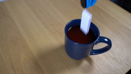
视觉工具实际返回图片 2
视觉工具实际返回图片 3
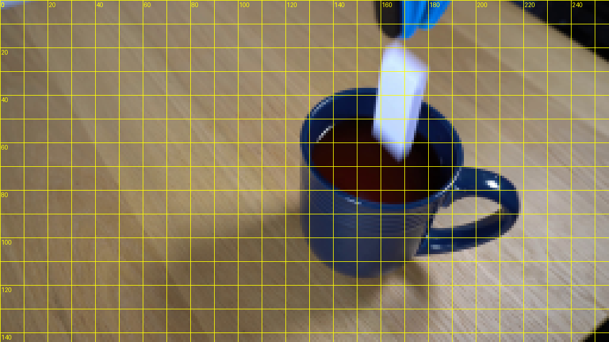
视觉工具实际返回图片 4
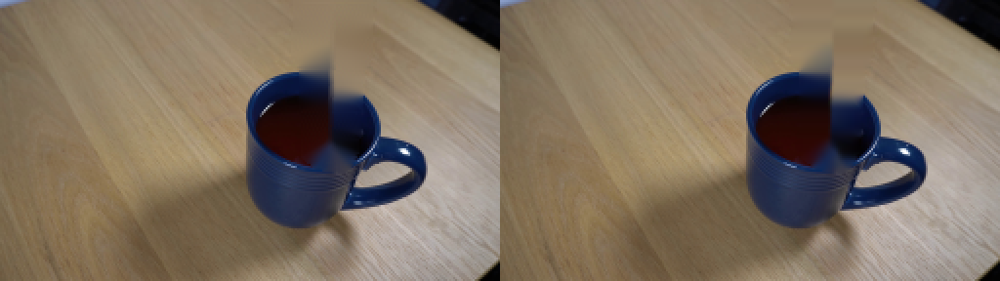
视觉工具实际返回图片 5
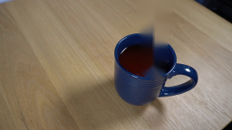
视觉工具实际返回图片 6
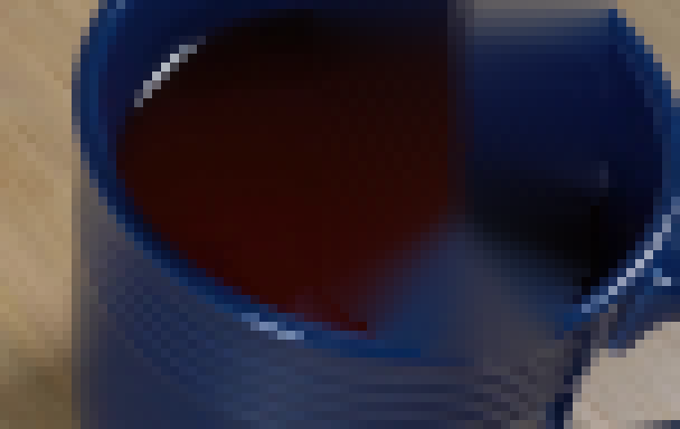
视觉工具实际返回图片 7
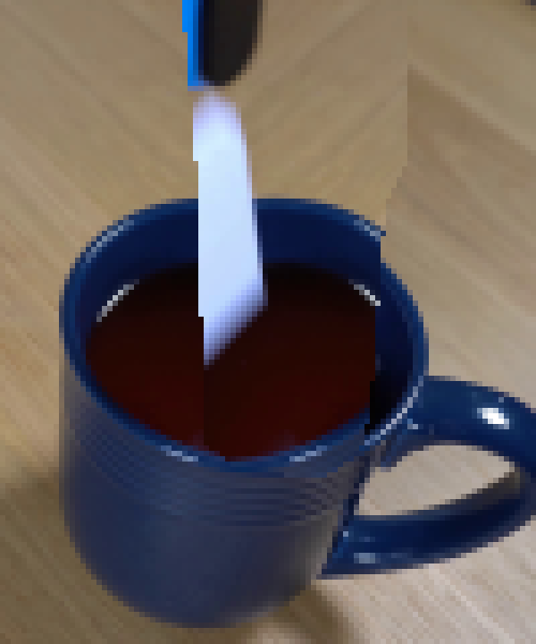
视觉工具实际返回图片 8
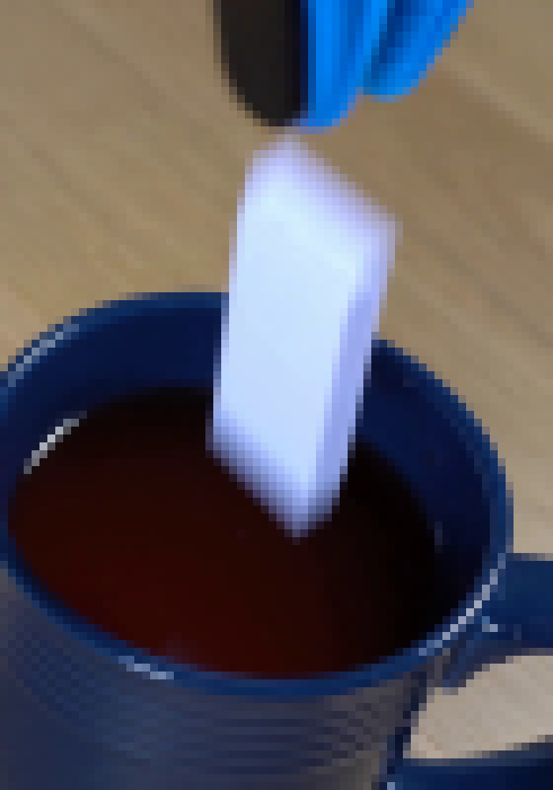
视觉工具实际返回图片 9
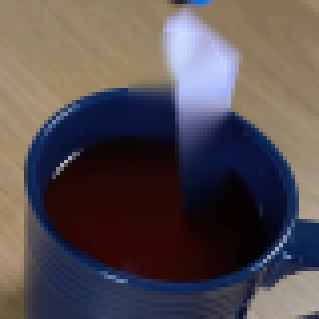
视觉工具实际返回图片 10
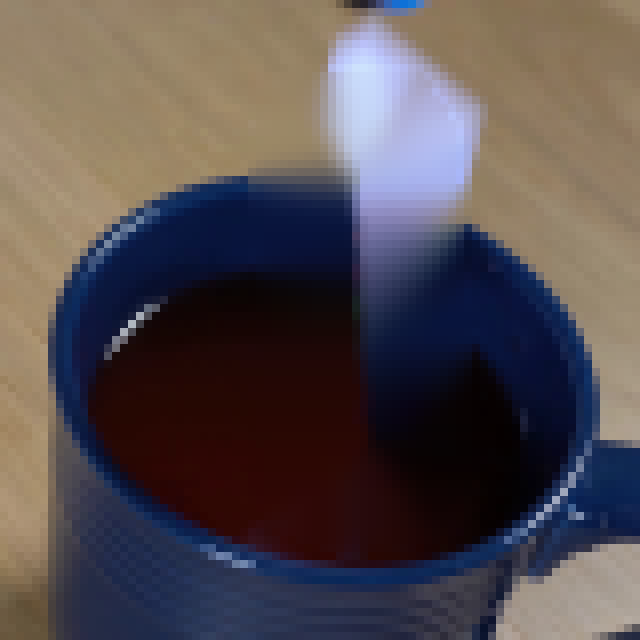
视觉工具实际返回图片 11
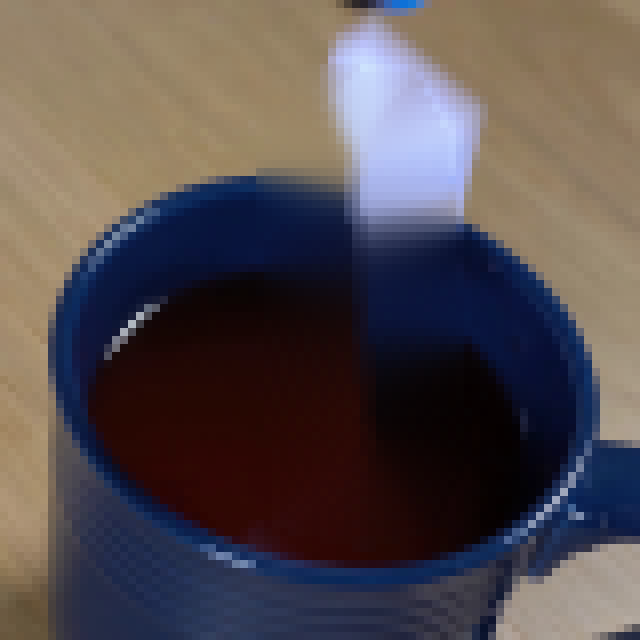
视觉工具实际返回图片 12
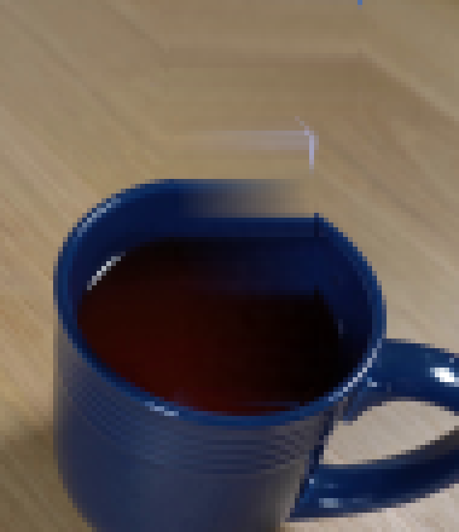
视觉工具实际返回图片 13
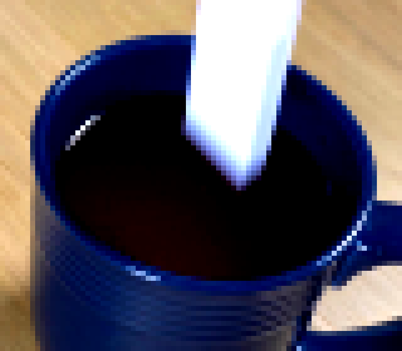
视觉工具实际返回图片 14
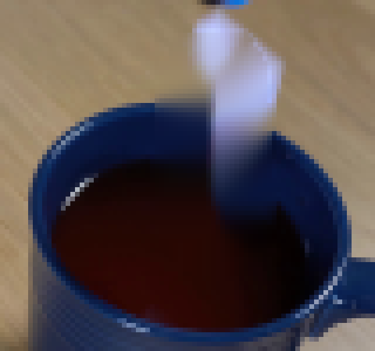
视觉工具实际返回图片 15
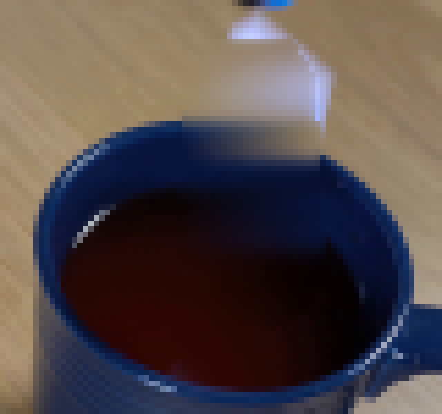
视觉工具实际返回图片 16
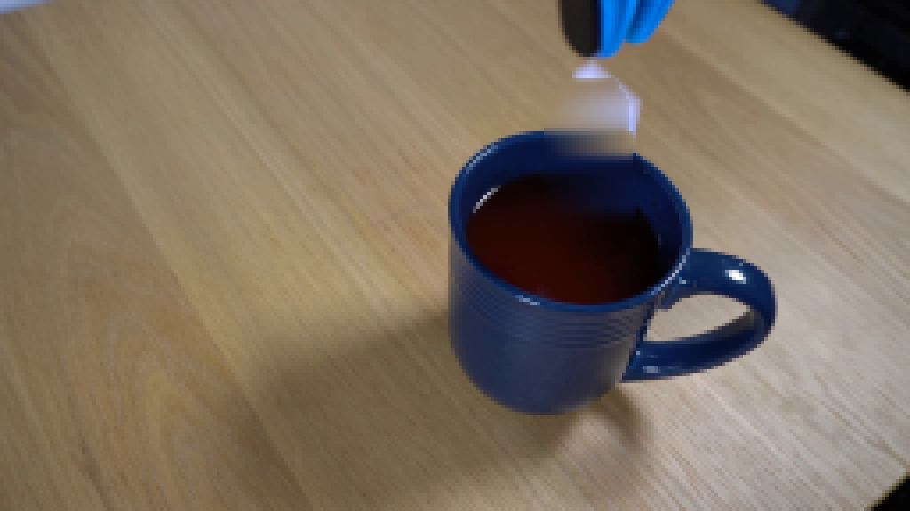
视觉工具实际返回图片 17
视觉工具实际返回图片 18
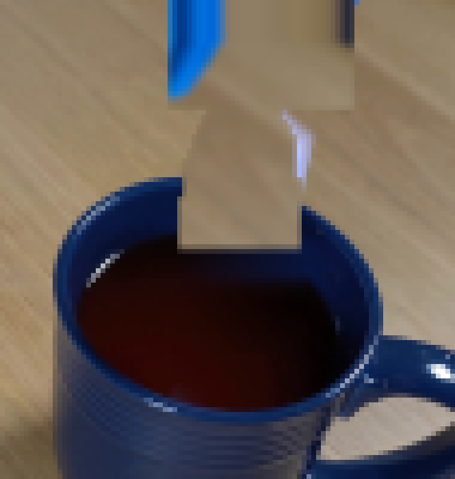
视觉工具实际返回图片 19
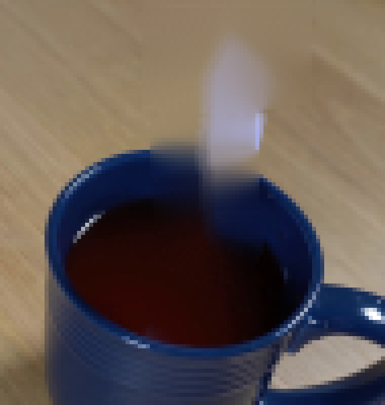
视觉工具实际返回图片 20
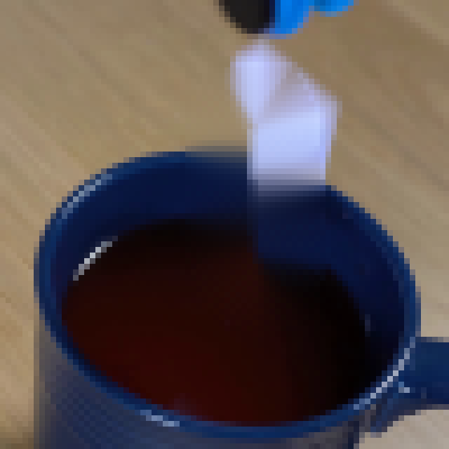
保存候选 0 份；完成命令 28 次；可验证图片返回 20 张。原始 API 响应与完整日志保留在本地。